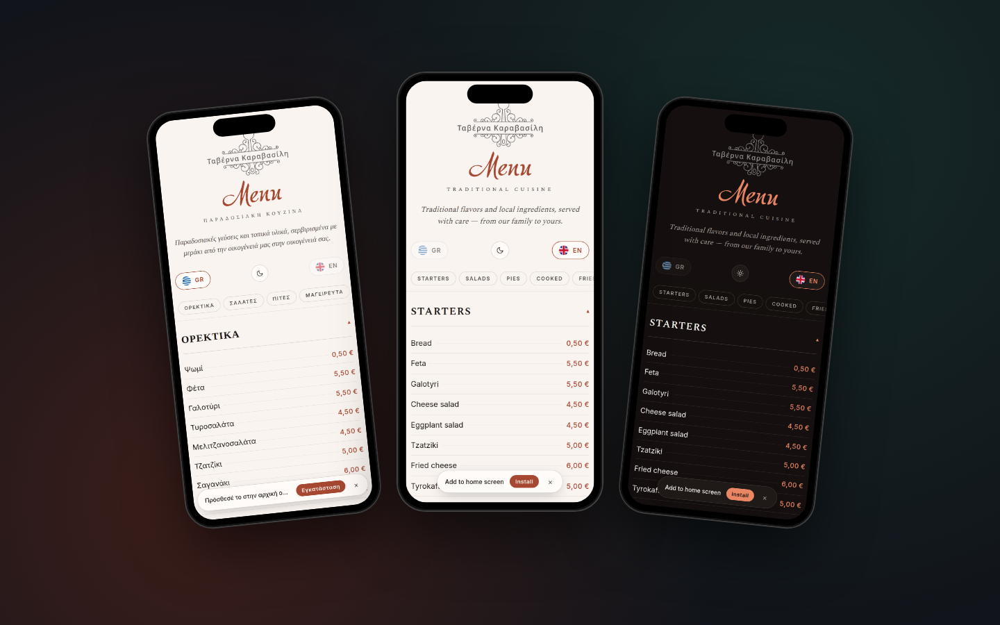

Mobile-only by design
Desktop visitors see a friendly "menu only on mobile" splash so guests interact with it the way it was built.
Mobile-first digital menu for a traditional Greek tavern. Bilingual GR / EN, light / dark theme, and a snappy category navigation — all deployed for free on Cloudflare Pages.

The taverna wanted to replace their printed menu with something guests can pull up on a phone — fast to load, easy to update, and respectful of the brand. The result is a single-page React app deployed for free on Cloudflare Pages, served from edge locations with sub-100ms TTFB.
Mobile-only by design: opening the URL on a desktop intentionally shows a "menu only on mobile" message, so guests use it the way it was meant to be used.
The menu data is a single JSON file — the owner can edit prices and items without me, push to GitHub, and Cloudflare Pages redeploys in seconds. No CMS, no monthly fee, no maintenance bill.
Desktop visitors see a friendly "menu only on mobile" splash so guests interact with it the way it was built.
Greek and English content live side-by-side in the JSON; the user toggles with a tap, no page reload.
Warm cream by day, deep charcoal by night — terracotta accent and serif type carry that traditional taverna feel either way.
Horizontal pill nav scrolls with the page so guests can jump between Starters, Salads, Cooked, Grill etc.
The whole menu is one JSON file — owner edits items + prices in any text editor, pushes, Cloudflare redeploys.
Cloudflare Pages free tier with global CDN — sub-100ms TTFB anywhere in Europe, no monthly bill.
Next project
GIS platform mapping a municipality's entire street-lighting network.
{kind=link}
{kind=link}
{kind=link}
{kind=link}
{kind=link}